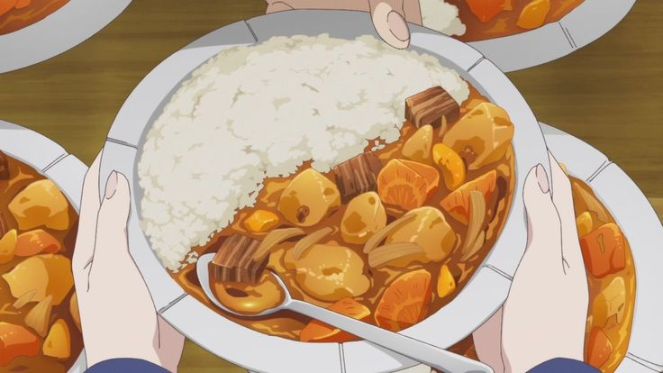

Curry
Curry

Ingredients
-
- 400g beef rump, sliced thinly
- 50ml sunflower oil
- 200ml basmati rice (use a measuring jug), rinsed in several changes of cold water then drained
- 450ml boiling water
- 1tbsp fresh ginger, minced
- a few slices of fresh ginger
- 2 cloves garlic, minced
- 1 tsp ground cumin
- 1tsp ground coriander
- 1tsp turmeric
- 1tsp ground black pepper
- ½tsp chilli powder
- ½tsp ground ginger
- 100g frozen peas
- sprigs of coriander, to garnish
- salt